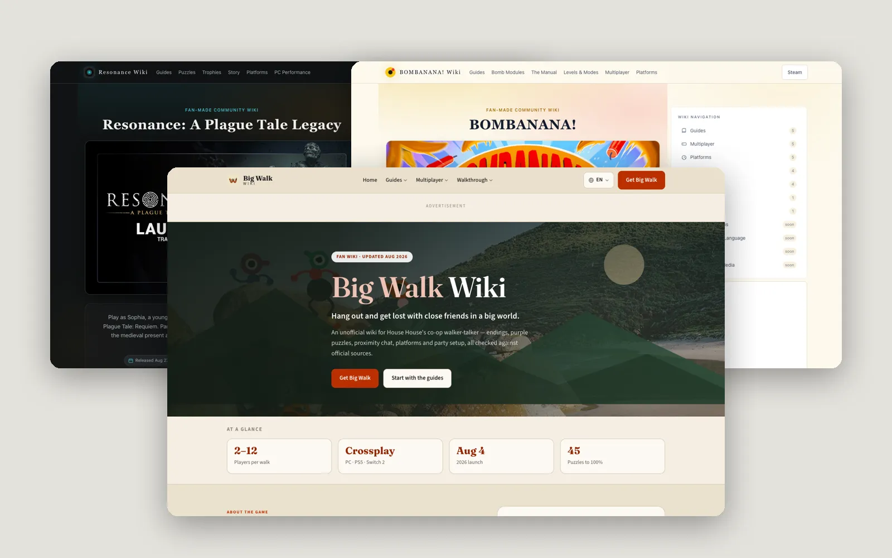

返回作品列表
出海游戏 Wiki 站

项目背景
自己做的副业项目，瞄准新游戏的流量窗口
这是我自己做的副业项目——瞄准几款刚上线的海外热门游戏，做对应的攻略 Wiki 站，靠 SEO 流量赚广告收入。算是对"被动收入"这个概念的一次实战验证。
选游戏攻略这个方向有几个原因：一是新游戏上线初期搜索量会暴涨，但内容供给跟不上，有窗口期；二是攻略内容相对标准化，AI 辅助生产的效率高；三是广告变现简单直接，不需要做产品和运营。
核心挑战
从零开始，怎么快速做出有流量的站
做 SEO 站的难点不在技术，而在判断和执行——选什么游戏、做哪些关键词、内容质量怎么保证、怎么快速被 Google 收录、怎么避免被算法惩罚。每一步做错了都可能白忙活。
而且是一个人做，时间精力有限，不可能什么都做。必须聚焦在投入产出比最高的事情上。
解决方案
选词、建站、内容、SEO 全流程自己来
整个流程是这样的：先通过 Ahrefs 和 Google Trends 筛选有潜力的新游戏——搜索量快速上升但竞争还不大的那种。然后注册域名、搭 WordPress 站、设计主题。主题是自己改的，确保 Core Web Vitals 分数好看。
内容方面，用 AI 辅助生成初稿，然后人工校对和补充实操经验。每篇攻略都配有游戏截图和步骤说明，确保真的能用。三个站加起来有 300+ 篇内容。
SEO 是重点——从关键词研究到站内结构（分类、标签、内链）、外链建设（论坛、社交、客座文章）、技术 SEO（速度、结构化数据、移动端），每一步都做了。不是什么黑帽技术，就是老老实实地把该做的都做好。
最终成果
3 个月日均 2000 访问，稳定盈利中
三个站目前都稳定运营中。最快的一个站上线 3 个月就有了日均 2000 访问，另外两个稍慢但也在稳步增长。目前月广告收入足够覆盖服务器和内容成本，还能有一些盈余。
这个项目最大的收获不是赚了多少钱，而是完整跑通了"从 0 到 1 做一个有流量的网站"的流程。这套方法论可以复制到其他垂直领域。